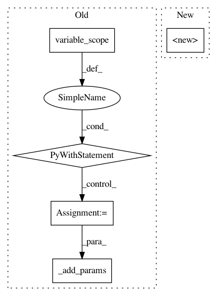

b28dd6df8909de61bb6e7ddd18d3890bc57b10b5,tensorlayer/layers/normalization.py,LayerNorm,__init__,#LayerNorm#Any#Any#Any#Any#Any#Any#Any#Any#Any#Any#,400
Before Change
"LayerNorm %s: act: %s" % (self.name, self.act.__name__ if self.act is not None else "No Activation")
)
with tf.compat.v1.variable_scope(name) as vs:
self.outputs = tf.contrib.layers.layer_norm(
self.inputs,
center=center,
scale=scale,
activation_fn=self.act,
reuse=reuse,
variables_collections=variables_collections,
outputs_collections=outputs_collections,
trainable=trainable,
begin_norm_axis=begin_norm_axis,
begin_params_axis=begin_params_axis,
scope="var",
)
variables = tf.compat.v1.get_collection("TF_GRAPHKEYS_VARIABLES", scope=vs.name)
self._add_layers(self.outputs)
self._add_params(variables)
class GroupNorm(Layer):
The :class:`GroupNorm` layer is for Group Normalization.
After Change
):
// super(LayerNorm, self).__init__(prev_layer=prev_layer, act=act, name=name)
super(LayerNorm, self).__init__(name)
self.center = center
self.scale = scale
self.act = act
self.epsilon = epsilon
In pattern: SUPERPATTERN
Frequency: 3
Non-data size: 5
Instances
Project Name: tensorlayer/tensorlayer
Commit Name: b28dd6df8909de61bb6e7ddd18d3890bc57b10b5
Time: 2019-01-22
Author: rundi_wu@pku.edu.cn
File Name: tensorlayer/layers/normalization.py
Class Name: LayerNorm
Method Name: __init__
Project Name: tensorlayer/tensorlayer
Commit Name: d79992cfd669974296a34d861060c921a8b12d9f
Time: 2018-12-05
Author: dhsig552@163.com
File Name: tensorlayer/layers/convolution/expert_conv.py
Class Name: Conv2dLayer
Method Name: __init__
Project Name: tensorlayer/tensorlayer
Commit Name: 2e0f0929df4b01b269962a6423d6cb78b6d3da17
Time: 2018-12-04
Author: dhsig552@163.com
File Name: tensorlayer/layers/inputs.py
Class Name: EmbeddingInput
Method Name: __init__